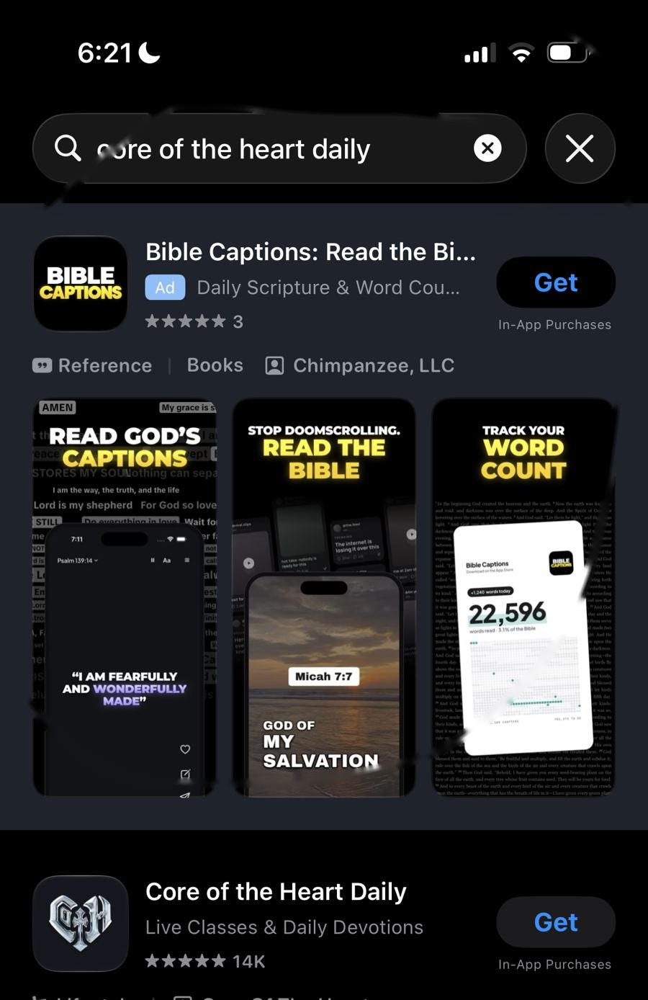
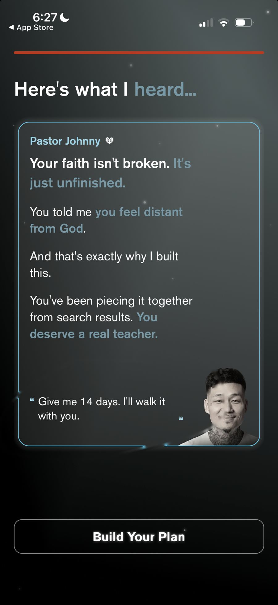
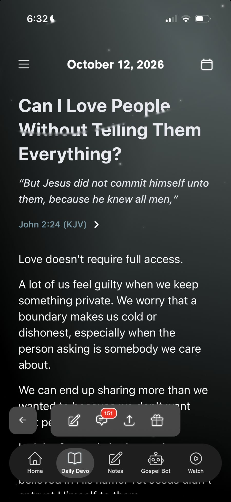

Screen callouts
Initial thoughts
01App Store

1 2Search: "core of the heart daily"
People love it
Amazing ratings and feedback on the store: 4.9 stars from almost 14K ratings. At a glance, users love the product.
A competitor is bidding on your name
A Bible Captions ad sits above you for your own brand search. I'd defend the brand on Apple Ads, especially if organic or social is sending people to search for you. We deal with this at Rapchat. It sucks to pay for it, but it's usually worth it.
Polish the screenshots and lead with Johnny
The screenshots could use a polish, and Johnny could be way more prominent in them. He's the reason people are here. He might even belong on the app icon.
The old app is still live
"Old app - Core of the Heart" (Fourthwall, 788 ratings) is still for sale and shows up under "You Might Also Like" on your new listing. Once migration is done I'd pull it from sale, and until then make sure it points people to the new app.
02Onboarding

3"Here's what I heard," after the survey
Small layout bug on the quote
The closing quote mark on "Give me 14 days" floats away from the text, and the block sits awkwardly against Johnny's photo.
The survey feels a bit laggy
Some form fields and the onboarding survey are a tad laggy, and the date picker doesn't look like iOS. Not a big deal, just noticed. What's the tech stack? Is it native?
Catch the people who skip the video
If someone skips the intro video before 30 seconds, the next few screens could still introduce Johnny in a quick slideshow.
Stuck on enable notifications
I got stuck on this step and couldn't tell whether notifications actually got enabled. Analytics would show how many people hit this.
03Daily devo

4 5Today's devo, mid-read
Some things jump around
Small detail, but some things jump around and don't feel smooth or native. The top nav sits in a different spot between screens, and the context menu feels off too.
Comments are sticky but in a weird spot
Comments look super popular, but they live in the floating bar with a red badge count that pulls attention while you're reading. I'd find a calmer home that still shows they're active.
Make Gospel Bot feel like Johnny
Curious how much Gospel Bot gets used. AI is in vogue, but a bot doesn't fit the rest of the brand. I'd call it Chat, frame it as Johnny's assistant, and give it a friendly avatar so it feels less like a bot.